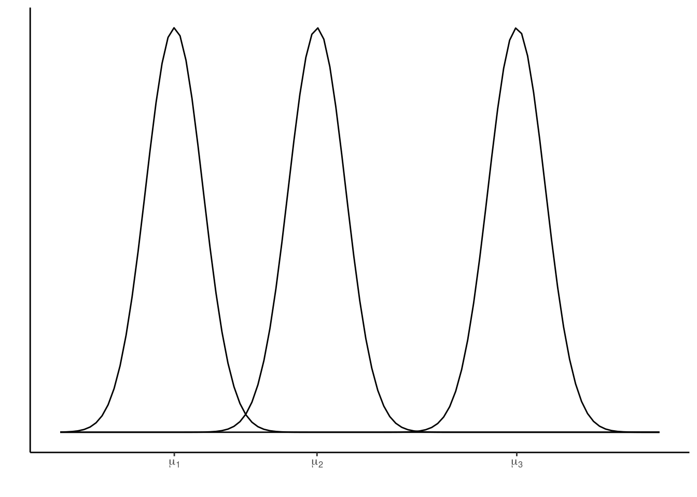

Some basic experimental designs
Completely randomised design (CRD)
Let's consider a completely randomised design with one treatment factor (e.g., coffee bean type). Here, \(n\) experimental units (e.g., cups) are divided randomly into \(t\) groups. Random allocation can be achieved by simply drawing lots from a hat! To be more rigorous, though, we could use R's sample() function (have a go yourself and see if you can work out how to wield sample()). Each group is then given one treatment level (one of the treatment factors). As we have defined only one treatment factor all other known independent variables are kept constant so as to not bias any effects (e.g., cup type and type in Charlotte's☕ experiment).

An illustration of a CRD with one tratment factor and three treatment levels (A, B, & C)
Designing a CRD using R
Let's assume you want to set up an experiment similar to the coffee one above using R to do the random allocation of treatments for you.
## create a character vector of bean types
beans <- rep(c("Arabica","Liberica", "Robusta"), each = 4)
beans## [1] "Arabica" "Arabica" "Arabica" "Arabica" "Liberica" "Liberica"
## [7] "Liberica" "Liberica" "Robusta" "Robusta" "Robusta" "Robusta"## randomly sample the character vector to give the order of coffees
set.seed(1234) ## this is ONLY for consistency, remove if doing this yourself
allocation <- sample(beans, 12)
allocation## [1] "Robusta" "Robusta" "Liberica" "Liberica" "Arabica" "Liberica"
## [7] "Arabica" "Robusta" "Arabica" "Liberica" "Robusta" "Arabica"Having run the code above your CRD plan is as follows
| Cup | Bean |
|---|---|
| 1 | Robusta |
| 2 | Robusta |
| 3 | Liberica |
| 4 | Liberica |
| 5 | Arabica |
| 6 | Liberica |
| 7 | Arabica |
| 8 | Robusta |
| 9 | Arabica |
| 10 | Liberica |
| 11 | Robusta |
| 12 | Arabica |
Randomised complete block design (RCBD)
Let's consider a randomised complete block design with one treatment factor (e.g., coffee bean type). If the treatment factor has \(t\) levels there will be \(b\) blocks that each contain \(t\) experimental units resulting in a total of \(t\times b\) experimental units. For example, let's imagine that for the coffee experiment we had two cup types: mugs and heatproof glasses. We might consider the type of receptacle to have an effect on the coffee colour measured, however, we are not interested in this. Therefore, to negate this we block by cup type. This means that any effect due to the blocking factor (cup type) is accounted for by the blocking.
For a blocked design we want the \(t\) experimental units within each block should be as homogeneous as possible (as similar as possible, so that there is unlikely to be unwanted variation coming into the experiment this way). The variation between blocks (the groups of experimental units) should be large enough (i.e., blocking factors different enough) so that conclusions can be drawn. Allocation of treatments to experimental units is done randomly (i.e., treatments are randomly assigned to units) within each block.

An illustration of a CRD with one tratment factor, three treatment levels (A, B, & C), and three blocks (rows)
Designing a RCBD using R
Let's assume you want to set up an experiment similar to the coffee one above; however, now you are in the situation where you have two types of cups (six mugs and six heatproof glasses). Below we use R to do the random allocation of treatments within each block (cup type) for you.
Here we have \(t = 3\) treatments (bean types) and \(b = 2\) blocks (cup types) so we will have \(t \times b = 6\) experimental units in total.
set.seed(432) ## this is ONLY for consistency, remove if doing this yourself
plan <- data.frame(Beans = rep(c("Arabica","Liberica", "Robusta"), times = 2),
Block = rep(c("Mug", "Glass"), each = 3)) %>% ## combine experiment variables
group_by(Block) %>% ## group by blocking factor
dplyr::sample_n(3)
plan## # A tibble: 6 × 2
## # Groups: Block [2]
## Beans Block
## <chr> <chr>
## 1 Robusta Glass
## 2 Arabica Glass
## 3 Liberica Glass
## 4 Robusta Mug
## 5 Arabica Mug
## 6 Liberica MugHaving run the code above your RCBD plan is as follows
| Cup | Beans | Block |
|---|---|---|
| 1 | Robusta | Glass |
| 2 | Arabica | Glass |
| 3 | Liberica | Glass |
| 1 | Robusta | Mug |
| 2 | Arabica | Mug |
| 3 | Liberica | Mug |
Factorial design
A factorial experiment is one where there are two or more sets of (factor) treatments. Rather than studying each factor separately all combinations of the treatment factors are considered. Factorial designs enable us to infer any interaction effects, which may be present. An interaction effect is one where the effect of one variable depends on the value of another variable (i.e., the effect of one treatment factor on the response variable will change depending on the value of a second treatment factor.)
For example, we could add another treatment to the coffee experiment above: grinder type (manual or electric ). So, now we have two treatments, bean type (with three levels) and cup type (with two levels). Recall that in a factorial experiment we want to study all combinations of the levels of each factor:
| Manual | Electric | |
|---|---|---|
| Arabica | A.M | A.E |
| Liberica | L.M | L. E |
| Robusta | R.M | R. E |
Note is a factorial design has equal numbers of replicates in each group then it is said to be a balanced design; if this is not the case then it is unbalanced.
Now, our question about the colour of coffee would be Does the colour of the difference in the colour of the coffee between the beans wall depend on the grinder used?
Possible outcomes

Interactions between two factor treatments
If an interaction effect exists the effect of one factor on the response will change depending on the level of the other factor:

The plot above is called an interaction plot, think back to the previous module. Creating such a plot is often very useful when drawing inference; in this instance we can see that the colour of the coffee changes depending on the type of coffee bean used, however, this relationship differs depending on the type of grinder used. For example, Liberica beans produce darker coffee than the other two beans when the electric grinder is used, but weaker coffee when the manual grinder is used.